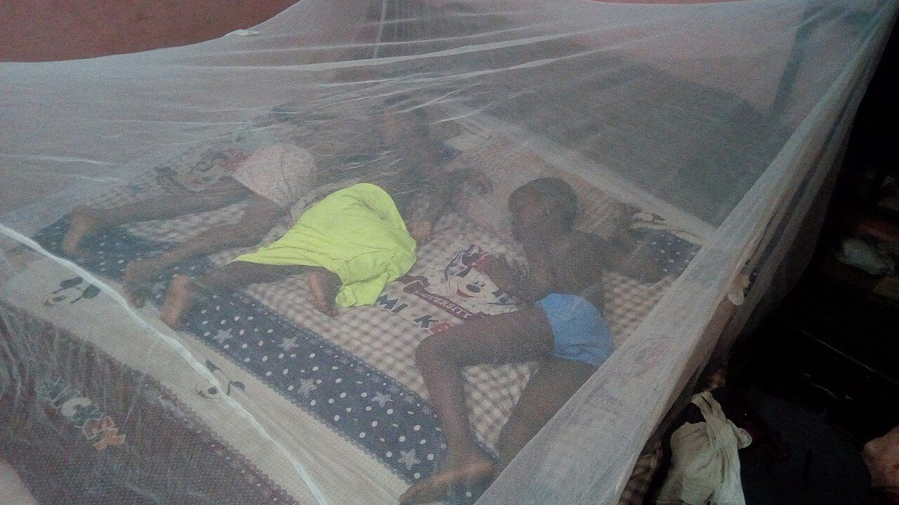
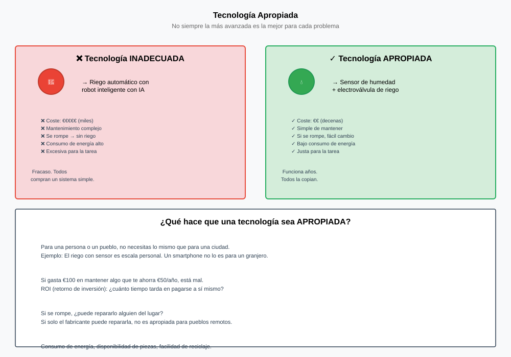
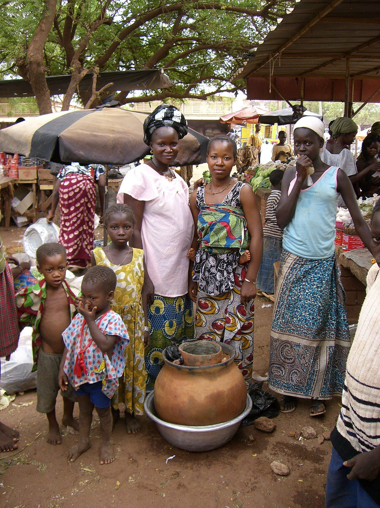
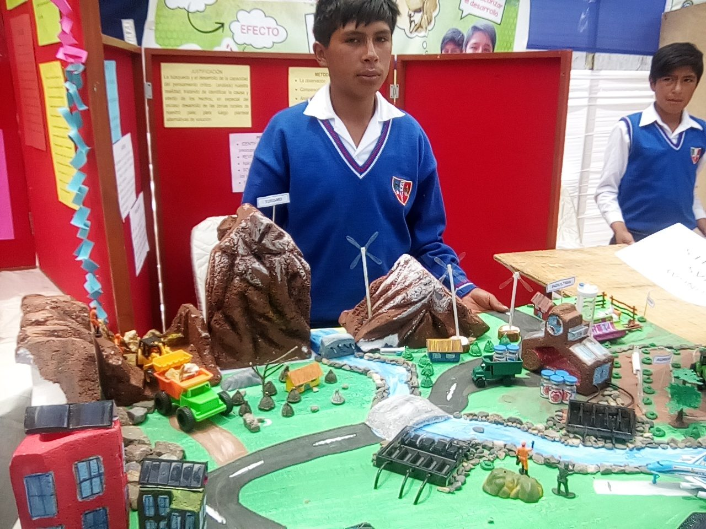
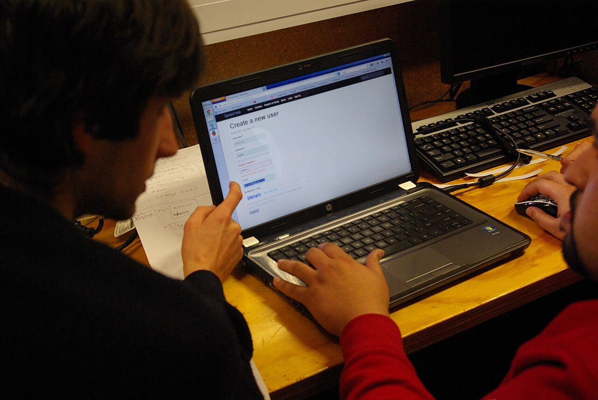
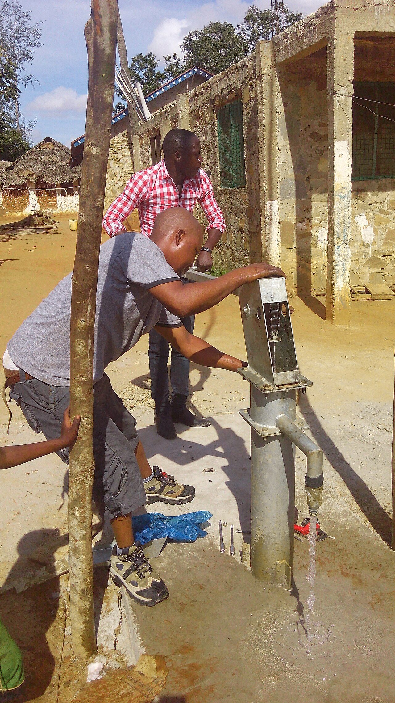
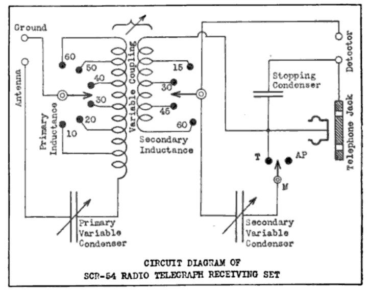
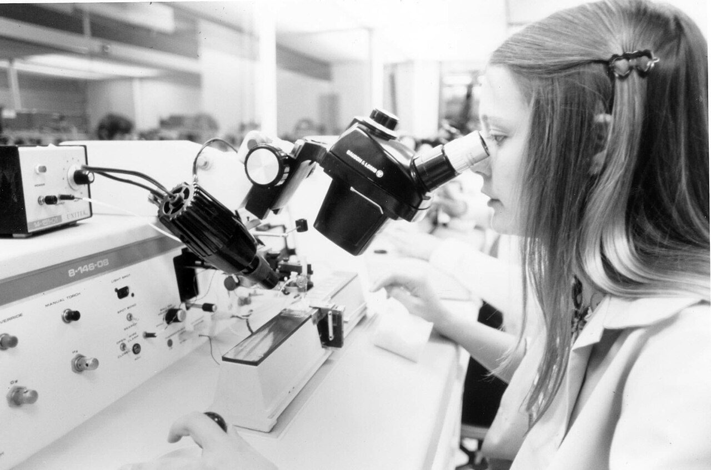

De 1.393 medicamentos nuevos, 16 para lo que mata a más gente
No hace falta una conspiración para que un problema se quede sin resolver: basta con una división. Y la segunda parte pasa en vuestro instituto.
Llevas el curso entero con el mismo aparato. Lo detectaste, lo diseñaste, lo fabricaste, lo contaste, lo automatizaste y lo has medido. Y funciona. Esta unidad va de algo que no se puede hacer hasta que funciona: mirarlo desde fuera.
De qué va esta unidad
Tu aparato funciona y casi no contamina. ¿A quién le sirve de verdad, y quién decidió que ese era el problema que había que resolver?Voz sintetizada sobre guión propio. La boca sigue el volumen real de la voz.
Ahora, al lado de cada uno, escribid por qué no está resuelto.
Lo que sale casi siempre es «no hay dinero», «no interesa» o «a los de arriba les da igual». El problema de esas tres frases es que son la misma frase, y sirve para explicarlo todo: lo que explica cualquier cosa no explica ninguna. Así que vamos a cambiarla por una cuenta.
Empecemos por un dato que no es una opinión:
No hay ninguna ley que prohíba fabricar esos medicamentos. No hay nadie reunido en un sótano decidiendo que no. Y aun así, de 1.393 salieron 16. ¿Qué es lo que lo decide, entonces? Escribe tu hipótesis en el cuaderno. Dentro de diez minutos la comprobamos con números.
La respuesta que damos casi todos es: «se fabrica lo que la gente necesita». Vamos a ver qué pasa si eso fuera verdad.
Si se fabricara lo que hace falta, los 1.393 medicamentos se repartirían más o menos como se reparte el daño. El paludismo solo causó 282 millones de casos y 610.000 muertes en 2024, según la Organización Mundial de la Salud. Con ese peso, debería llevarse una parte grande del reparto. Se llevó una parte minúscula. La solución ingenua no explica lo que pasa, así que hay que cambiarla.
Necesitar y poder pagar no son lo mismo
Un mercado no cuenta personas: cuenta euros. Lo que mueve a una empresa no es cuánta gente sufre un problema, es cuánta gente sufre ese problema y puede pagar por quitárselo. A eso se le llama demanda solvente.
Cien millones de personas que no tienen un euro no son un mercado. Dos millones que pueden pagar trescientos euros al año, sí.
Y ahora la cuenta, que es más sencilla de lo que parece. Antes de fabricar nada hay que desarrollarlo: diseñarlo, probarlo, certificarlo. Eso se paga una vez y por adelantado, antes de vender ni una unidad.
La cuenta que decide qué se fabrica
precio mínimo = coste de desarrollo ÷ (personas que lo comprarán × años de venta)
Ese es el precio por debajo del cual la empresa pierde dinero. Después se compara con una sola cosa:
- Si el precio mínimo cabe en lo que puede pagar quien lo sufre, se fabrica.
- Si no cabe, no se fabrica. Y no ha hecho falta que nadie lo decida: sale de la división.
Por eso una enfermedad que sufren ocho millones de personas muy pobres puede quedarse sin medicamento mientras otra que sufren treinta millones de personas con sueldo tiene cuatro.
Pruébalo. Elige un problema pinchando en su barra, mira la cuenta escrita a la derecha y después mueve los tres mandos. Fíjate sobre todo en el botón de arriba: reordena por personas atendidas y mira si el orden cambia.
¿Por qué aparecen los años de exclusiva en la cuenta? Por la patente. Una patente da al que inventa algo el derecho a ser el único que lo fabrica durante veinte años desde que la solicita, y a cambio le obliga a publicar exactamente cómo se hace.
No es un regalo ni es un robo: es un trato, y tiene sus dos caras. Sin patente, el primero que copie vende más barato porque no ha pagado el desarrollo, así que nadie desarrolla nada. Con patente, durante esos años el precio lo pone uno solo, y puede ponerlo donde quiera. Las dos cosas son verdad a la vez.
El segundo mecanismo, y este lo tenéis en vuestro instituto
Mira otra vez la barra del aire cargado en el aula, que es vuestro proyecto B. Lo que paga el que lo sufre es casi cero, y no porque sea pobre.
Quien decide no es quien lo sufre
Un alumno pasa cinco horas al día en un aula cargada. Le duele la cabeza, se duerme y rinde menos. Y no compra nada: quien compra es el centro, y quien paga es la administración. El que sufre el problema no está en la mesa donde se decide.
Esto no pasa solo en los institutos. Pasa cada vez que el que elige un aparato, el que lo paga y el que lo sufre son personas distintas:
- el que elige la impresora del centro no es el que se pelea con ella;
- el que diseña un mando a distancia con botones de cuatro milímetros no tiene artrosis;
- el que decide dónde va una parada de autobús no la espera bajo la lluvia.
Cuando esos tres papeles se separan, el aparato que sale es peor. Y no porque nadie tenga mala intención.

Cuatro maneras de arreglarlo, sin cambiar de planeta
Si el problema está en la división, hay cuatro sitios donde meter mano:
- Dinero público en el desarrollo. Si el coste de desarrollo ya está pagado, el precio mínimo baja de golpe. Es lo que hace la investigación de las universidades.
- Compra garantizada. Alguien se compromete por adelantado a comprar tantas unidades a tanto el precio. La empresa ya sabe que recupera antes de empezar.
- Premio. Se paga por conseguirlo, no por venderlo. Quien lo gana cobra aunque después lo regale.
- Hacerlo sin ánimo de lucro. Universidades, fundaciones, cooperativas, gente que publica el diseño para que cualquiera lo copie.
Y aquí va lo que quiero que te lleves de hoy: vuestro proyecto es la cuarta. El aviso de aula bien ventilada no lo va a fabricar nadie porque la cuenta no sale. Por eso lo estáis haciendo vosotros.
Un corto de un centro de investigación sobre las enfermedades que casi no salen en la cuenta de arriba. El vídeo no se carga hasta que lo pulsas, y se reproduce sin cookies de seguimiento. Si no se ve aquí —porque la red del centro bloquee YouTube o porque ese vídeo no se deje empotrar—, ábrelo directamente aquí. El vídeo es de su autor y no forma parte del material publicado bajo la licencia de esta página.
Primera parte · la cuenta, con la escena (10 min)
Con la escena de arriba, y anotando la cuenta entera en la libreta, no solo el resultado:
- Elegid vuestro proyecto (A, B o C) y el problema de la escena que más se le parezca. Copiad las cinco líneas de la cuenta.
- Con los mandos a 60 %, 10 años y 0 € de dinero público, ¿sale o no sale? Decid en euros cuánto sobra o cuánto falta por persona y año.
- Buscad el mando mínimo que le da la vuelta: el dinero público más pequeño con el que deja de dar pérdidas. Anotad la cifra.
- Pulsad ordenar por personas atendidas. Copiad los dos órdenes, uno debajo del otro, y explicad con una frase por qué no coinciden.
Segunda parte · la misma cuenta, aquí dentro (10 min)
Un medidor de CO2 de pared para un aula se compra hecho por unos 120 €. No hay que inventarlo: está en cualquier catálogo.
- Contad las aulas de vuestro centro. Multiplicad por 120 €. Esa es la cifra.
- Escribid tres cosas que el centro sí haya comprado este curso y que cuesten parecido. ¿Están todas por encima de esto en la lista de prioridades? Razonadlo, sin ironías.
- Decid quién tendría que decidirlo: no «el instituto», sino un cargo concreto. Averiguadlo.
- Y la de verdad: si el aparato lo construís vosotros por 5 €, ¿quién tiene que dar permiso para colgarlo en la pared? Escribid a quién se lo preguntaríais y qué le diríais.
Cómo se evalúa
- La cuenta de la escena, copiada entera y con unidades (2 puntos).
- El dinero público mínimo que le da la vuelta, con su cifra (2 puntos).
- La explicación de por qué los dos órdenes no coinciden (2 puntos).
- La cuenta de las aulas y las tres compras comparadas (2 puntos).
- El cargo concreto, con nombre de puesto y no «el instituto» (2 puntos).
- ¿Por qué «se fabrica lo que la gente necesita» no explica lo de los 1.393 medicamentos?
Ver respuesta
Porque si fuera verdad el reparto se parecería al del daño, y no se parece: enfermedades que sufren cientos de millones de personas se llevaron el 1,1 %. Lo que se reparte no sigue al daño, sigue al dinero que hay detrás de ese daño.
- ¿Qué es la demanda solvente, y en qué se diferencia de la necesidad?
Ver respuesta
La necesidad es cuánta gente sufre el problema. La demanda solvente es cuánta gente sufre el problema y puede pagar por quitárselo. El mercado solo ve la segunda, porque es la única que se convierte en euros.
- Escribe la cuenta que decide si algo se fabrica, y di qué se compara con qué.
Ver respuesta
Precio mínimo = coste de desarrollo ÷ (personas que lo comprarán × años de venta). Ese precio mínimo se compara con lo que puede pagar quien lo sufre. Si no cabe, no se fabrica, y no hace falta que nadie lo decida.
- Un medidor de CO2 de aula existe y cuesta 120 €. ¿Por qué no hay uno en cada clase?
Ver respuesta
Porque quien lo sufre no es quien compra. El alumno que aguanta el aula cargada no tiene con qué comprarlo y no está en la mesa donde se decide; el que decide no pasa cinco horas ahí dentro. Cuando el que elige, el que paga y el que sufre son tres personas distintas, lo que se compra es peor.
Lectura del tema
Una sesión entera para leer y contestar. Conviene hacerla pronto, entre esta sesión y la siguiente, porque cuenta con detalle los dos casos que van a salir después. 30 párrafos numerados: cada uno lee el suyo en voz alta, en orden. Después, diez preguntas por escrito.
El columpio que sacaba agua, y las horas que no cabían en el día
Dinero, premios y mil instalaciones, y no sirvió. La solución buena depende del sitio, y eso se calcula.
Esta es la historia de un aparato que lo tuvo todo a favor.
La idea es preciosa y se entiende en cinco segundos: los niños juegan, y mientras juegan sale agua. El folleto prometía 2.500 personas por bomba y hasta 1.400 litros por hora desde cuarenta metros de profundidad.
Haz tú la cuenta. Una persona necesita unos diez litros al día para sobrevivir: beber, cocinar y lavarse lo mínimo. Si la bomba tiene que dar de beber a 2.500 personas y sube 1.400 litros cada hora, ¿cuántas horas al día tiene que estar girando ese tiovivo?
Es una división. Házla en el cuaderno antes de tocar la escena.
Con los números que prometía el folleto salen casi dieciocho horas de girar sin parar. Cuando alguien fue a medir el caudal de verdad, la cuenta subía a veintisiete horas al día. Un día tiene veinticuatro.
Nadie mintió, y probablemente nadie hizo la división. Y esa división está al alcance de cualquiera de vosotros.
La PlayPump no falló por falta de dinero ni por mala fe. Falló por otra cosa, y esa cosa tiene nombre desde 1973.
Tecnología apropiada
Es la que encaja con el sitio donde va a vivir: con la energía que hay allí, con los materiales que se consiguen allí, con las manos que la van a manejar y con el dinero que hay para arreglarla.
El término lo popularizó el economista E. F. Schumacher en 1973, en un libro llamado Lo pequeño es hermoso. Él la llamaba tecnología intermedia: ni la azada sola ni la cosechadora de cien mil euros, sino lo que de verdad se puede mantener funcionando.
Apropiada no quiere decir pobre, ni de segunda, ni sin electrónica. Quiere decir adecuada a ese sitio. En vuestro instituto, con enchufe, wifi, taller y alguien que sabe, un Arduino sí es tecnología apropiada. En un huerto a tres kilómetros, puede que no.

Las cinco preguntas del sitio
Antes de dar por bueno un diseño, se le hacen estas cinco. Si alguna no tiene respuesta, el diseño no está terminado, aunque funcione en la mesa:
- ¿De dónde sale la energía? Y no vale «de la batería»: ¿y cuando se acabe?
- ¿Quién lo maneja? ¿Sabe? ¿Quiere? ¿Le compensa?
- ¿Quién lo arregla, y con qué pieza? ¿A cuántos kilómetros está esa pieza y cuánto cuesta?
- ¿Qué pasa el día que falla? ¿Se nota? ¿Se queda algo peor que antes de ponerlo?
- ¿Quién decidió que este era el problema? ¿Se lo preguntó alguien a quien lo sufre?
La PlayPump fallaba en la uno, en la tres y en la cinco. La bomba de mano de toda la vida, que era lo que había antes, no fallaba en ninguna.
Un aparato que aprueba las cinco

Ojo con la conclusión fácil. Esto no significa que lo sencillo sea siempre mejor, ni que la electrónica sobre. La olla de barro no enfría por debajo de cierta temperatura, no sirve donde el aire está húmedo y no vale para una vacuna. No es una nevera mala: es la solución correcta en un sitio concreto, igual que un Arduino es la correcta en el vuestro. Lo apropiado no es una categoría del aparato: es una relación entre el aparato y el sitio.
Ahora el vuestro, y con números
Vuelve a la escena de arriba y cambia al modo «Tu proyecto en tres sitios». Elige el proyecto C, la lámpara, y ponlo en el instituto. Después muévelo a la aldea y al huerto, sin tocar nada más.
La cuenta de la energía, que es la que casi nadie hace
La energía que gasta un aparato al día, en vatios-hora:
Wh = V × A × horas
Y lo que aguanta con lo que tiene guardado:
autonomía (días) = energía guardada (Wh) ÷ consumo al día (Wh)
Una pila AA alcalina guarda del orden de 3,7 Wh (unos 2.500 mAh a 1,5 V), así que cuatro dan unos 15 Wh. Un panel solar de 5 W en un sitio con cuatro horas de sol bueno y un rendimiento del 70 % mete unos 14 Wh al día.
Lo que sale, y no es lo que todo el mundo espera
Con el riego automático, la bomba funciona cuarenta segundos al día y se lleva unas centésimas de vatio-hora. La placa Arduino, que no hace nada el 99,95 % del tiempo, se lleva 5,4 Wh. O sea: casi toda la energía se va en esperar, no en trabajar.
Consecuencia directa para vuestro proyecto: si alguna vez tiene que ir a pilas, lo que hay que atacar no es el actuador. Es el tiempo que la placa está despierta sin necesidad.
En la escena, marca la placa duerme entre medidas. El consumo baja, pero no baja tanto como esperabas: se queda en 12 mA. Es que una placa Uno entera no puede dormir del todo. El regulador de tensión, el LED verde de encendido y el chip del puerto USB siguen chupando aunque el microcontrolador esté parado.
El ATmega328P solo, sin placa, dormido de verdad, baja a milésimas de eso. Por eso los aparatos a pilas de verdad no llevan dentro una placa Arduino: llevan el chip pelado. Es un salto que ya no cabe en 4.º, pero conviene saber que existe.
La misma idea de la olla de barro, llevada a un producto que se vende. Sirve para discutir si sigue siendo tecnología apropiada cuando se convierte en un negocio. El vídeo no se carga hasta que lo pulsas, y se reproduce sin cookies de seguimiento. Si no se ve aquí —porque la red del centro bloquee YouTube o porque ese vídeo no se deje empotrar—, ábrelo directamente aquí. El vídeo es de su autor y no forma parte del material publicado bajo la licencia de esta página.
Primera parte · la tabla (10 min)
Con la escena en el modo de los tres sitios, rellenad en la libreta esta tabla para vuestro proyecto. Una fila por sitio:
- Wh que gasta al día, y qué porcentaje se lleva la placa.
- Wh que entran al día, o el coste en euros si hay enchufe.
- Días que aguanta sin que vaya nadie.
- Veredicto: sirve / no sirve, y por cuál de las cinco preguntas falla.
Después repetid la fila del huerto marcando «la placa duerme». ¿Cuántos días se ganan? ¿Llega ya a los treinta?
Segunda parte · rediseñar para el sitio donde no sirve (10 min)
Coged el sitio donde vuestro proyecto suspende y proponed una solución que sí sirva allí. Vale cambiar de tecnología entera. Tres pistas, una por proyecto:
- A · riego: una botella boca abajo con un gotero de barro riega todos los días, no gasta nada y no se estropea. ¿Qué pierde frente al vuestro? Decidlo con honradez.
- B · aviso de aula: ¿hace falta un piloto encendido las veinticuatro horas, o basta con que se encienda cuando hay alguien? Calculad el ahorro.
- C · lámpara: ¿y si en vez de una placa se usa un interruptor crepuscular de los que se venden hechos? Buscad qué consume.
Escribid vuestra propuesta en cinco líneas y pasadle las cinco preguntas del sitio. Si suspende alguna, decidlo: es parte de la respuesta.
Cómo se evalúa
- La tabla completa, con los tres sitios y sus números (3 puntos).
- El porcentaje que se lleva la placa, bien calculado (1 punto).
- La fila con la placa dormida, y la conclusión (1 punto).
- El rediseño, con lo que gana y lo que pierde (3 puntos).
- Las cinco preguntas aplicadas al rediseño, sin maquillar (2 puntos).
- La PlayPump tenía dinero, premios y mil instalaciones. ¿Por qué falló?
Ver respuesta
Porque la cuenta no salía: para dar de beber a 2.500 personas hacían falta entre 18 y 27 horas de giro al día, y un día tiene 24. Además se rompía y la pieza de repuesto no estaba al alcance de quien la usaba. No falló la financiación: falló el encaje con el sitio.
- Define tecnología apropiada sin usar la palabra «sencillo».
Ver respuesta
La que encaja con el sitio donde va a vivir: con la energía que hay allí, los materiales que se consiguen allí, las manos que la van a manejar y el dinero que hay para arreglarla. Puede ser electrónica y complicada: lo que la hace apropiada no es lo que lleva dentro, es la relación con el sitio.
- En el riego automático, ¿qué se lleva casi toda la energía, la bomba o la placa? ¿Por qué?
Ver respuesta
La placa, y con mucha diferencia. La bomba trabaja cuarenta segundos al día; la placa está despierta 24 horas gastando 45 mA. Son 5,4 Wh contra unas centésimas. En un aparato que espera casi todo el rato, el consumo de esperar es el consumo.
- Una de las cinco preguntas del sitio no va de técnica. ¿Cuál, y por qué está ahí?
Ver respuesta
La quinta: ¿quién decidió que este era el problema? Está ahí porque un aparato perfecto que resuelve un problema que nadie tenía sigue sin servir para nada, y eso no se arregla mejorando el aparato. Es la pregunta con la que se abrió la unidad.
Seis minutos, tres personas que no estaban y una pregunta incómoda
La rúbrica, por adelantado. Y la demostración de que el mismo proyecto saca 4,17 o 9,67 según dónde gastes los segundos.
El día de la defensa hay tres personas sentadas delante que no estaban: no os han visto pelearos con el sensor, no saben lo que costó que la bomba no se ahogara y no tienen ningún motivo para ser amables. Tenéis seis minutos.
Casi todos los guiones salen parecidos, y se parecen a este:

Mirad vuestro guión y sumad los segundos que le habéis dado a cómo lo montamos. Después sumad los que le habéis dado a a quién le sirve y a qué hemos medido. Si la primera cifra es mayor que la suma de las otras dos, no pasa nada: le pasa a casi todo el mundo, y hoy vamos a ver exactamente cuánto cuesta en puntos.
Lo primero, la rúbrica. La tenéis antes de preparar la defensa, a propósito: una rúbrica que se enseña después no sirve para aprender, sirve para justificar una nota.
Poned el guión de siempre, mirad la nota, y después pulsad el otro botón. Es el mismo proyecto y los mismos seis minutos.
Lo que acaba de pasar
El guión de siempre saca 4,17. El reparto por peso saca 9,67. No ha cambiado el proyecto, ni el aparato, ni el tiempo: ha cambiado dónde se gastan los segundos. Son cinco puntos y medio de diferencia por decidir mal en qué gastar trescientos sesenta segundos.
Y la razón es aritmética, no estética: 6,5 de los 10 puntos son de lo que el aparato hace por alguien, y cero de cómo lo montasteis. No porque montarlo no tenga mérito, sino porque de eso va la unidad 2 y esto es la 9.
El orden que funciona, y por qué ese
- El problema y de quién es (~1 min). Quién lo sufre, dónde y cómo lo sabéis. Si en los primeros treinta segundos no se ha dicho a quién le sirve, el jurado ya está pensando en otra cosa.
- Qué hace el aparato (~1 min). En una frase, y enseñándolo.
- La prueba de que funciona (~1 min). Encendedlo. Si hay riesgo de que falle, llevad un vídeo de veinte segundos grabado. Un fallo en directo no baja la nota; quedarse sin enseñar nada, sí.
- El impacto, con la cuenta delante (~1,5 min). Litros, vatios-hora o euros, con las unidades y con de dónde sale cada número.
- Lo que falla y qué haríais (~1 min). El fallo de verdad, no uno de adorno. Esto sube la nota: dice que habéis mirado vuestro propio trabajo con ojo crítico.
- Las preguntas (~0,5 min de vuestra parte).
Fíjate en que «cómo lo montamos» no aparece. Si preguntan, se cuenta; si no, se queda en la memoria escrita, que es donde le toca.
La pregunta incómoda
Va a haber una. No es para pillaros: es para ver si distinguís lo que habéis medido de lo que os habéis creído. Se contesta con cuatro movimientos, en este orden.
Cómo se contesta lo que no te apetece que te pregunten
- Repite la pregunta con tus palabras. Ganas cinco segundos y compruebas que la has entendido. Si no la has entendido, pregúntalo: no es una derrota.
- Separa lo que sabes de lo que supones. «Medimos esto; aquello lo estamos suponiendo.»
- Da el dato si lo tienes. Y si no lo tienes, di «no lo hemos medido». Esas cuatro palabras suman puntos. Un número inventado los quita todos, y se nota siempre, porque la siguiente pregunta es de dónde sale.
- Di cómo lo averiguarías. «Para saberlo habría que medir X durante Y días.» Esto convierte un agujero en un plan.
Lo único que no se hace nunca: inventarse un número.
Las cinco que van a caer
- «Se va la luz una semana en Navidad. ¿Qué pasa con la planta?» — proyecto A.
- «Vuestro piloto dice que hay que ventilar y fuera hace cuatro grados. ¿Quién decide, el aparato o el profesor? ¿Y si nadie hace caso?» — proyecto B.
- «¿Cuánto ha costado fabricarlo y cuánto ahorra al año?» — proyecto C, y esa es la sesión que viene.
- «¿Quién lo arregla cuando vosotros acabéis 4.º?» — los tres.
- «¿Lo habéis probado con alguien que no seáis vosotros?» — los tres, y es la que más duele.
Llevadlas contestadas por escrito. No para leerlas: para no estrenaros delante del jurado.
La regla que usa la escena para enlazar tiempo y nivel —diez segundos para nombrar algo, veinticinco para explicarlo, cuarenta y cinco para demostrarlo con un dato— es criterio nuestro, no viene en ningún sitio oficial. Está puesta para que se vea una cosa que de otra manera no se ve: dedicarle cinco segundos a algo es exactamente igual que no dedicárselos. En la rúbrica no hay medio punto por mencionar. Lo que se mide es lo que se demuestra.


Antes de empezar (4 min)
Cada grupo reparte sus seis minutos con la escena de arriba y anota la nota que espera sacar. Ese número se escribe y se tapa.
Primera ronda (8 min)
- El grupo A defiende. Seis minutos y se corta: alguien cronometra de verdad.
- El grupo B puntúa con la rúbrica, fila por fila, poniendo el nivel 0-3 de cada una. Sin hablar entre ellos hasta el final.
- El grupo B hace dos preguntas de la lista y una propia. La propia tiene que ser sobre algo que no se haya contado.
Segunda ronda (8 min)
Al revés. Y al terminar, las dos cosas que de verdad enseñan:
- Comparad la nota que esperábais con la que os ha puesto el otro grupo. Anotad la diferencia y, sobre todo, en qué fila está la mayor discrepancia. Casi siempre es la misma: la del impacto.
- Escribid la pregunta que peor habéis contestado y, con los cuatro movimientos delante, la respuesta que deberíais haber dado.
Cómo se evalúa
- El reparto de los seis minutos, escrito y razonado (2 puntos).
- La defensa cabe en el tiempo sin que la corten (1 punto).
- La rúbrica del otro grupo, rellenada entera y con criterio (2 puntos).
- La pregunta propia señala un agujero de verdad (2 puntos).
- La discrepancia entre las dos notas, con la fila señalada (1 punto).
- La respuesta reescrita usa los cuatro movimientos y no inventa ningún número (2 puntos).
- ¿Por qué el mismo proyecto saca 4,17 con un guión y 9,67 con otro?
Ver respuesta
Porque los seis minutos son los mismos pero los puntos no están repartidos igual: 6,5 de 10 son del problema, la medida, el impacto y lo que falla, y 0 de cómo se montó. Gastar cuatro minutos en la parte que vale cero deja sin tiempo a las que valen.
- Te preguntan un dato que no habéis medido. ¿Qué contestas?
Ver respuesta
«No lo hemos medido», y a continuación cómo lo averiguaríais: qué mediríais, con qué y durante cuánto tiempo. Eso convierte un agujero en un plan y suma. Inventarse un número resta todo, porque la siguiente pregunta siempre es de dónde sale.
- ¿Por qué contar lo que falla sube la nota en vez de bajarla?
Ver respuesta
Porque lo que se evalúa no es que el aparato sea perfecto —no lo es ninguno—, sino que sepáis mirarlo con ojo crítico y proponer la mejora. Es un criterio entero, el 6.3, y vale 1,5 puntos. Ocultar el fallo no lo hace desaparecer: lo deja para que lo encuentre el jurado.
- ¿Qué pasa si el aparato se estropea justo delante del jurado?
Ver respuesta
Casi nada, si lo habéis previsto: se enseña el vídeo de veinte segundos que lleváis grabado y se dice qué ha fallado. Lo que sí baja la nota es quedarse sin enseñar nada, porque ese indicador vale 2 puntos y sin prueba se queda en cero.
¿Cuándo devuelve tu aparato lo que costó hacerlo?
La última cuenta del curso, y no sale bien. Impactos que no se pueden sumar, escala, y por dónde seguir.
Última sesión del curso, y empieza con la pregunta que se quedó colgando.
Para hacerla hacen falta tres cosas, y las tres las tenéis: lo que gasta una bombilla LED (unos 9 W), las horas que se quedaba encendida de más (pongamos hora y media al día) y lo que cuesta el kilovatio hora (del orden de 0,15 €).
La placa que decide cuándo apagar también gasta, y gasta las veinticuatro horas. Son 45 mA a 5 V. Calcula cuántos vatios-hora al día son y réstalos del ahorro antes de dividir. La cifra que sale sorprende a todo el mundo.
La cuenta es esta, y no tiene más misterio:
Cuándo devuelve lo que costó
Un aparato empieza su vida en números rojos: lo que costó hacerlo ya está gastado el primer día. A partir de ahí, cada año descuenta lo que ahorra.
saldo(t) = ahorro al año × t − lo que costó
años en devolverlo = lo que costó ÷ ahorro al año
Y después, la comparación que casi nadie hace:
Si tarda más en devolverlo de lo que dura antes de romperse, no lo devuelve nunca. Por muy bien que funcione.
Aquí están los tres proyectos del curso con esa cuenta hecha. Empieza por la C, que es la del reto, y después mira las otras dos.
Tres resultados incómodos, y los tres son verdad
- C · la lámpara. Con una bombilla LED de 9 W, el ahorro neto es de menos de medio euro al año, porque la placa se come el 40 % de lo que ahorra. Con esos números no lo devuelve jamás. Pero pon la misma lámpara donde hay un halógeno de 50 W encendido seis horas de más, y lo devuelve en menos de seis años. El aparato es el mismo: cambia dónde está el desperdicio.
- A · el riego. Ahorra unos 490 litros de agua al año por planta, que está muy bien. En euros son menos de un euro, porque en España el agua es barata; y la placa se gasta un tercio de eso en electricidad. En litros sí ahorra; en euros casi no. Las dos frases son ciertas y no se contradicen: es que el precio de una cosa no mide lo que vale.
- B · el aviso de ventilación. Este da números rojos a propósito. Ventilar cuesta calefacción: cada renovación completa del aire de un aula en invierno son 0,75 kWh, y cuatro al día durante el curso pasan de 500 kWh. Lo que se gana a cambio es aire respirable, y eso no se mide en euros.
Dos reglas que se llevan de aquí
- Hay impactos que no se pueden sumar. Litros, kilovatios hora, euros y horas de aire limpio son unidades distintas. Se pueden poner una al lado de otra; no se pueden sumar. Quien las suma en un solo número está eligiendo, en secreto, cuánto vale cada una.
- El impacto depende de la escala y del sitio. Un aparato que no se amortiza en una lámpara se amortiza en treinta aulas, y uno que no ahorra euros en España puede ahorrar agua decisiva en otro sitio. Es la misma idea de la sesión 2, ahora con la calculadora delante.
Hay una parte de la cuenta que no está hecha, y prefiero decírosla a que la descubráis vosotros: la energía y los minerales que costó fabricar la placa, el sensor y los cables. Eso también está gastado el primer día y no aparece en ningún sitio de la escena.
No lo he metido porque no tengo un número fiable para un Arduino, y meter una cifra inventada en una cuenta la estropea entera. Lo que sí se puede afirmar sin riesgo es la dirección: si se contara, el tiempo de retorno sería más largo, nunca más corto. Esto tiene nombre —análisis de ciclo de vida— y es una carrera entera.
Un vídeo universitario, más seco que los otros, sobre cómo se hace de verdad la cuenta que aquí hemos dejado a medias. El vídeo no se carga hasta que lo pulsas, y se reproduce sin cookies de seguimiento. Si no se ve aquí —porque la red del centro bloquee YouTube o porque ese vídeo no se deje empotrar—, ábrelo directamente aquí. El vídeo es de su autor y no forma parte del material publicado bajo la licencia de esta página.
Lo que queda del curso
Las seis cosas del curso, en cristiano
- Mirar y encontrar el problema antes de ponerse a construir nada.
- Fabricarlo de verdad, con material y herramienta reales, y sin hacerse daño.
- Contárselo a alguien que no estaba, en su idioma y en su tiempo.
- Automatizarlo: sensor, umbral, actuador, y un programa que no miente.
- Usar las herramientas digitales para simularlo antes de romper nada.
- Medir lo que le cuesta al planeta, incluido lo que cuesta el propio aparato.
Si dentro de diez años solo te queda una, que sea esta: antes de preguntar si funciona, pregunta a quién le sirve y quién eligió el problema.
Lo que no cabía. Este curso se ha quedado fuera bastante, y conviene saber qué: el análisis de ciclo de vida hecho en serio, la accesibilidad (diseñar para quien no ve, no oye o no puede apretar un botón), el residuo electrónico y dónde acaba, y el derecho a reparar. Cuatro cosas que dan para un curso entero cada una.

Por dónde se sigue, si esto te ha gustado
- En el instituto: Tecnología e Ingeniería en 1.º y 2.º de Bachillerato, y Dibujo Técnico si lo tuyo ha sido el plano.
- En Formación Profesional: electrónica, mecatrónica, instalaciones, energías renovables, fabricación. Grado medio y superior, y se entra desde aquí.
- Por tu cuenta, y gratis: Tinkercad sigue siendo gratis cuando acabe el curso, y una placa cuesta lo que dos pizzas. Lo que habéis aprendido a programar no caduca.
- Con otros: un repair café, un club de robótica, el huerto del barrio. Lo que más enseña de todo esto es arreglar algo de alguien.
La ficha (10 min)
Una hoja, para vuestro proyecto, con estos seis apartados. Va a la memoria y se usa en la defensa:
- Lo que ahorra, en su unidad propia (litros, Wh o kWh), al año. Con la cuenta escrita, no solo el resultado.
- Lo mismo en euros, y el precio que habéis usado para convertirlo.
- Lo que gasta el propio aparato, restado ya. Si no lo restáis, el número de arriba está mal.
- Lo que costó y los años en devolverlo. Si no lo devuelve nunca, se escribe «nunca»: es un resultado, no un suspenso.
- Un impacto que no cabe en euros, dicho con su unidad propia: personas, horas, plantas vivas, grados. Y por qué no se puede sumar a lo anterior.
- Lo que NO habéis contado y sabéis que existe. Como mínimo, lo que costó fabricar la placa.
Y la pregunta del curso (5 min)
Debajo de la ficha, cuatro líneas contestando a esto, que es con lo que se abrió la unidad:
¿A quién le sirve de verdad vuestro aparato, y quién decidió que ese era el problema que había que resolver? Si la respuesta es «lo eligió el profesor», escribidlo: es la verdad, y a partir de ahí decid qué problema habríais elegido vosotros y a quién se lo habríais preguntado antes.
Cómo se evalúa
- El ahorro en su unidad, con la cuenta entera y las unidades (2 puntos).
- El consumo del propio aparato, restado (2 puntos).
- Los años en devolverlo, comparados con lo que dura (2 puntos).
- El impacto que no cabe en euros, con su unidad (2 puntos).
- La respuesta a la pregunta del curso, sin frases hechas (2 puntos).
- ¿Por qué el aviso de ventilación da números rojos y aun así puede ser buen proyecto?
Ver respuesta
Porque ventilar cuesta calefacción: cada renovación de un aula en invierno son unos 0,75 kWh, y el curso entero pasa de 500. Lo que da a cambio es aire respirable, y eso no se mide en euros. Los dos impactos son reales y están en unidades distintas: no se pueden sumar, hay que ponerlos uno al lado del otro y decidir.
- La misma lámpara automática no se amortiza nunca en un sitio y se amortiza en cinco años en otro. ¿Cómo puede ser?
Ver respuesta
Porque lo que se ahorra no depende del aparato, depende del desperdicio que corrige. Sobre una bombilla LED de 9 W apenas hay nada que ahorrar; sobre un halógeno de 50 W encendido seis horas de más, hay mucho. Es la tecnología apropiada de la sesión 2, ahora con la calculadora.
- ¿Qué parte de la cuenta del retorno hemos dejado sin hacer, y por qué?
Ver respuesta
La energía y los materiales que costó fabricar la placa y los componentes, que ya están gastados el primer día. No se ha hecho porque no tenemos un número fiable, y meter una cifra inventada estropea toda la cuenta. Lo que sí se puede afirmar es la dirección: el retorno sería más largo, nunca más corto.
- La pregunta con la que empezó la unidad: tu aparato funciona y casi no contamina. ¿Qué falta por preguntar?
Ver respuesta
A quién le sirve de verdad y quién decidió que ese era el problema. Son las dos preguntas que no se arreglan mejorando el aparato, y las únicas que siguen valiendo cuando la tecnología que has aprendido este curso se haya quedado vieja.
Lo que tiene que haber quedado de estas cuatro sesiones
1. Entre 1975 y 1999 salieron 1.393 medicamentos nuevos. ¿Cuántos eran para enfermedades tropicales y tuberculosis?
2. ¿Qué es la demanda solvente?
3. La cuenta que decide si algo se fabrica compara el precio mínimo con…
4. Un medidor de CO2 de aula existe y cuesta unos 120 €. ¿Cuál es la razón principal de que no haya uno en cada clase?
5. La PlayPump prometía dar agua a 2.500 personas y subía 1.400 litros por hora. Con 10 litros por persona y día, ¿cuántas horas de giro hacen falta al día?
6. ¿Qué quiere decir que una tecnología sea apropiada?
7. En el riego automático a pilas, ¿qué se lleva casi toda la energía?
8. En la rúbrica de la defensa, ¿cuánto vale «cómo lo montamos, paso a paso»?
9. Os preguntan un dato que no habéis medido. ¿Qué es lo mejor que podéis hacer?
10. Un aparato tarda 40 años en devolver lo que costó y se rompe a los 4. ¿Qué significa eso?
Se corrige en tu propio navegador: no se envía ni se guarda nada. Las explicaciones aparecen al corregir, tanto en las que aciertes como en las que falles.
«Sería útil» no es un requisito; quince días de agosto sí
Se pasa de «esto le viene bien a todo el mundo» a la lista de una persona con nombre. Se entrevista, se anota entre comillas y se convierte en números.
La segunda mitad de la unidad cambia de sitio. Las cuatro sesiones anteriores eran para mirar: quién decide, dónde encaja, cómo se cuenta, qué cuesta. Las cuatro que vienen son para que el aparato salga del aula y le sirva a alguien de verdad. Y eso empieza por saber a quién.
En la sesión 2 dejamos una pregunta sin contestar. Era la quinta de las cinco del sitio: ¿quién decidió que este era el problema? Hoy toca.
Casi todas las frases se parecen a estas tres:
- «Para el instituto, para ahorrar agua.»
- «Para que no se sequen las plantas.»
- «Para concienciar sobre el consumo.»
Las tres tienen el mismo agujero, y es gordo: dentro no hay nadie. El instituto no riega, no se olvida y no se va quince días en agosto. Las plantas tampoco cambian pilas. Y «concienciar» no lo comprueba nadie nunca.
Ahora mirad estas tres frases. Las dijo una persona de verdad, la profesora que lleva el huerto del centro, cuando le preguntaron:
«Del 20 de julio al 1 de septiembre aquí no viene nadie.»
«El enchufe más cercano está en el taller, a cuarenta metros.»
«Lo que se me muere no es la lechuga: son los semilleros.»
Una de las tres obliga a cambiar el aparato, otra es una limitación que no podéis tocar y la tercera cambia el proyecto entero. Decid cuál es cuál, y por qué. Después tachad vuestra frase de antes y volved a escribirla, pero con un nombre propio y una fecha dentro.
La diferencia entre las frases de la profesora y las vuestras no es que ella sepa más de tecnología. Es que las suyas se pueden comprobar y las vuestras no.
Un requisito es una frase que se puede comprobar
Para que una frase sea un requisito le tienen que caber tres cosas:
- un número con su unidad, o una prueba que se pueda hacer delante de alguien;
- quién lo pidió, con nombre;
- y cómo se sabrá si se cumple o no.
«Que sea fiable» no es un requisito: es un deseo. «Que aguante 43 días sin que vaya nadie» sí, porque el 15 de septiembre se mira la planta y o está viva o no lo está.
Tres cosas distintas, y conviene no mezclarlas
- Requisito: lo que tiene que conseguir. Lleva número. Quince días.
- Restricción: lo que no podéis cambiar por mucho que queráis. Por el pasillo no pasa un cable. No se discute: se diseña con ella dentro.
- Deseo: lo que estaría bien. Que quede bonito. No se tira, pero va al final de la lista y se dice que va al final.
La trampa más común es apuntar una restricción como si fuera un deseo. Entonces se diseña ignorándola y el día de la entrega no cabe por la puerta.
Ojo con la solución disfrazada de necesidad. Cuando alguien te dice «lo que hace falta aquí es una app», no te está contando su problema: te está dando su solución, que probablemente sea peor que la tuya porque él no sabe qué se puede construir. La pregunta que lo deshace es tonta y funciona siempre: «¿y eso para qué te serviría?». Se repite hasta que sale algo que no es un aparato. Suele hacer falta preguntarlo tres veces.
Cómo se pregunta, que tampoco es obvio
Una entrevista mal hecha devuelve lo que tú querías oír. La gente es amable y te dice que sí. Así que no se preguntan opiniones: se preguntan hechos del pasado.

Cinco preguntas que sí sacan requisitos
- ¿Qué haces ahora, exactamente? Paso a paso, hoy. No qué te gustaría hacer.
- ¿Cuándo fue la última vez que salió mal? ¿Qué pasó? Aquí salen los números de verdad.
- ¿Cuánto tiempo tienes para esto a la semana? Porque el aparato le va a pedir algo de tiempo, y si no lo tiene, sobra.
- ¿Qué pasa si falla y nadie se entera? Lo que hay que proteger está en esa respuesta.
- ¿Qué es lo que yo no puedo cambiar? Paredes, enchufes, horarios, normas del centro, personas.
Y una regla que vale más que las cinco: se anota lo que dice, entre comillas. No lo que tú entiendes. En cuanto lo resumes con tus palabras, le has metido dentro tu solución sin darte cuenta.
De las comillas al número
En la escena están los tres destinatarios con sus frases literales. Los mandos de la derecha son vuestro aparato, el que tenéis montado, y no cambian al cambiar de persona: el aparato es el mismo. Lo que cambia es lo que le piden.
Empieza por la vecina, que es el caso amable, y llévalo hasta que cumpla los tres. Después pasa al huerto sin tocar nada.
Vuestro aparato, tal y como está en el taller
Lo que acaba de pasar
Con la vecina se llega: seis pilas, ocho litros de depósito y la placa durmiendo, y cumple los tres. Con el huerto no se llega ni forzando los mandos al máximo, y no porque el aparato sea peor: es que el bancal pide 6 litros al día y 43 días sin nadie son 258 litros. Eso no es un depósito: es un bidón de los grandes, o una toma de agua.
En el aula de infantil pasa lo mismo por otro lado: la placa gasta 1,45 Wh al día durmiendo, y 90 días son 130 Wh, o sea treinta y seis pilas. Con ocho llega a 20 días de los 90.
Conclusión, y es la de la sesión: cuando un mando no da para tanto, lo que hay que cambiar no es el mando: es el diseño. En el huerto, un enchufe y una toma de agua. En infantil, un enchufe. Y eso se sabe antes de construir si se pregunta antes de construir.
Priorizar, que es decir que no
Una lista de requisitos sin orden no sirve, porque el día que falte tiempo —y va a faltar— no se sabrá qué recortar. Se ordenan en tres montones:
- Sin esto no sirve. Si falla uno, el aparato no se entrega.
- Esto lo mejora. Se hace si da tiempo, y se dice que es así.
- Esto es un lujo. Se apunta para que no se olvide, y se deja para otro.
La regla: si todo está en el primer montón, no habéis priorizado, os habéis limitado a copiar la lista. Y quien decide el orden no sois vosotros: es quien lo va a usar.
¿Y los requisitos que no son números? «No leen. Ninguno» no tiene unidades, y aun así es el requisito más duro de esa aula. No se tiran: se convierten en una comprobación, o sea en algo que se hace delante de la persona y que puede salir mal. En este caso: enseñarle la señal a un niño de cuatro años y preguntarle qué hay que hacer. Si no lo sabe, no cumple.
Esa idea —convertir lo que no es un número en algo que se comprueba delante— es toda la sesión 8.
Primera parte · la entrevista cruzada (10 min)
No hace falta salir del aula. Cada grupo recibe una ficha de destinatario (el conserje, la maestra de infantil, la vecina, quien lleva el huerto) con cuatro datos suyos que no puede soltar si no se los preguntan. Las frases de la escena de arriba sirven de modelo para escribir esas fichas: cuatro líneas por persona, una de ellas la incómoda.
- Escribid vuestras seis preguntas: las cinco de la libreta más una vuestra. La vuestra tiene que ser sobre algo que os preocupe del aparato.
- Entrevistad al otro grupo, cinco minutos, y anotad sus respuestas entre comillas. Literal. Un secretario solo para eso.
- Cambiad los papeles y repetid.
Segunda parte · la lista (10 min)
Con lo que tenéis anotado, una tabla de seis filas. Una por frase:
- la frase literal, entre comillas;
- si es requisito, restricción o deseo;
- el número con su unidad, si lo lleva, o cómo se comprueba si no lo lleva;
- el montón: sin esto no sirve / lo mejora / es un lujo;
- y lo que da vuestro aparato hoy, con la cuenta hecha.
Por lo menos tres de las seis tienen que acabar en un número, y una de ellas tiene que ser de autonomía: cuántos días aguanta sin que vaya nadie. Esa la calculáis con la escena y con la cuenta escrita.
Y debajo, dos líneas: ¿cuál de los seis os obliga a cambiar el diseño? Si ninguno, es que habéis entrevistado mal.
Cómo se evalúa
- Las seis frases, literales y entrecomilladas (2 puntos).
- La clasificación en requisito, restricción y deseo, bien razonada (2 puntos).
- Los tres números con unidad, y la cuenta de la autonomía entera (2 puntos).
- Las comprobaciones de los que no son números, y que puedan salir mal (2 puntos).
- Los tres montones, con al menos uno fuera del primero (1 punto).
- El requisito que obliga a cambiar el diseño, señalado (1 punto).
- ¿Qué le falta a «nuestro proyecto es para el instituto, para ahorrar agua»?
Ver respuesta
Le falta una persona dentro y le falta un número. El instituto no riega, no se olvida y no se va de vacaciones. Sin alguien concreto no hay requisitos, y sin requisitos no hay manera de saber si el aparato sirve: solo de saber si funciona, que es otra cosa.
- Distingue requisito, restricción y deseo con un ejemplo de cada uno.
Ver respuesta
Requisito: lo que tiene que conseguir, con número —«aguantar quince días»—. Restricción: lo que no podéis cambiar —«por el pasillo no pasa un cable»—; se diseña con ella dentro. Deseo: lo que estaría bien —«que quede bonito»—; va al final de la lista y se dice.
- El mismo aparato cumple con la vecina y suspende en el huerto. ¿Por qué?
Ver respuesta
Porque el requisito lo pone la persona, no el aparato. La vecina se va 15 días y tiene cinco macetas que piden medio litro al día: son 7,6 litros. El huerto está 43 días solo y el bancal pide 6 litros al día: son 258 litros. No cabe en ningún depósito que podáis poner, así que allí hay que cambiar el diseño, no los mandos.
- La maestra dice «no leen, ninguno». No hay número. ¿Se tira ese requisito?
Ver respuesta
No: se convierte en una comprobación. Se le enseña la señal a un niño de cuatro años y se le pregunta qué hay que hacer. Si no lo sabe, no cumple. Un requisito sin número sigue valiendo mientras haya una manera de comprobarlo que pueda salir mal.
Lo que se rompe primero es lo que nadie sabía que había que hacer
No el impacto ambiental, sino la vida útil en manos de otro: quién cambia la pila, dónde está el recambio y qué pasa cuando vosotros ya no estáis.
Han pasado tres semanas desde que lo dejasteis funcionando. Sacad la sonda de humedad de la tierra y miradla a contraluz.
No es mala suerte ni es que el clavo fuera malo. Pasar corriente continua por tierra mojada es hacer la electrólisis, y en una electrólisis el electrodo positivo se disuelve. Le pasa a todo el mundo que mide humedad con dos clavos, y por eso las sondas que se venden hechas o son capacitivas o solo se alimentan el instante en que miden. El aparato no se ha roto: se ha gastado, que es distinto y mucho más común.
La sonda lleva seis días dando una lectura falsa. El aparato está encendido, el LED verde luce y la planta se está secando. Escribid dos cosas en el cuaderno:
¿Cuántos días tardaría alguien en enterarse? Y después, lo que de verdad cuesta: ¿quién es ese alguien? Con nombre y apellido, no «el centro».
Eso de ahí es la sesión de hoy. No vamos a hablar de lo que contamina —eso fue la unidad 8— ni de dónde acaba cuando se tira —eso fue la 3—. Vamos a hablar de algo más corto y más incómodo: cuánto tiempo sigue vivo vuestro aparato cuando vosotros ya no estáis.
En la sesión 4 dijimos que el aparato costó 25 € de material. Esa cifra es verdad y es la menos importante de todas.
El precio no es el coste
El precio es lo que pagas el primer día. El coste es lo que te va a costar tenerlo, y se cuenta a un plazo:
coste a 5 años = material inicial + lo que se gasta (pilas, piezas, agua) + las horas de quien lo cuida
La tercera es la que nadie suma, porque no se factura. Pero alguien las pone: el conserje que sube al huerto, la maestra que cambia cuatro pilas, el jefe de departamento que pide un recambio. Que no se cobre no significa que sea gratis; significa que lo paga alguien que no sale en la cuenta.
Las cuatro preguntas del mantenimiento
Son hermanas de las cinco preguntas del sitio de la sesión 2, pero miran al futuro en vez de al lugar:
- ¿Qué se gasta, y cada cuánto? Agua, pilas, la propia sonda. Con un número de días, no con un «de vez en cuando».
- ¿Quién va a ir? Con nombre.
- ¿Cuánto tarda en enterarse de que hay que ir? Porque el aparato no llama por teléfono.
- ¿Dónde está el recambio y cuánto tarda en llegar? El cajón del taller no es lo mismo que tres semanas de envío.
Y la quinta, que es la que mata: ¿quién irá cuando vosotros ya no estéis?
La escena recorre los 1.825 días siguientes a la entrega, uno a uno. Cada cosa que se gasta tiene su reloj; cuando una se agota, el aparato se para y no vuelve hasta que alguien va. Empieza tal y como está ahora mismo vuestro montaje.
Lo que sale, y no lo arregla ningún destornillador
- Tal y como está —pilas, dos clavos, dos litros de depósito y vosotros cuidándolo— hay que ir 72 veces, son 22 horas de alguien… y aun así el aparato se para del todo el día 273, tres días después de que dejéis de pasaros por allí. Funcionó el 7 % de los cinco años.
- Con enchufe, sonda capacitiva, depósito grande y el conserje: 5 visitas, 1,7 horas y 98 % de disponibilidad. El mismo aparato, el mismo problema y la misma gente.
- Entre esos dos extremos no hay nada más caro: la sonda capacitiva cuesta 2,50 €. Lo que cambia son decisiones, no presupuesto.
Disponibilidad: no es «funciona», es cuánto tiempo funciona
disponibilidad = días funcionando ÷ días totales
Un aparato que aguanta cuatro días y tarda dos en volver está disponible cuatro de cada seis días: el 67 %. Con las mismas piezas, si solo aguanta dos y tarda cuatro, baja al 33 %.
O sea que lo que manda no es solo lo rápido que se arregla: es la relación entre cuánto aguanta y cuánto tarda en volver. Y de los dos, el fácil de mover es el primero. Por eso la palanca más potente de todas no es arreglar mejor: es que no haga falta ir.
Fíjate en dónde están los mandos que mueven el resultado: de dónde sale la energía, cuánto guarda el depósito y qué sonda lleva. Los tres son decisiones que se toman diseñando, meses antes de que haya nada que mantener. El único mando que es de mantenimiento de verdad —quién va— lo mueve menos que los otros tres.
De ahí la frase de la sesión, y conviene que se quede: el mantenimiento no se decide manteniendo, se decide diseñando.
Compara el proyecto C con enchufe —cero visitas, 100 % de tiempo funcionando— con el A. Es una tentación concluir que el C es mejor proyecto, y no lo es: en la sesión 4 vimos que era el que menos ahorraba, tan poco que no devolvía nunca lo que costó. Lo que menos mantenimiento pide suele ser lo que menos hace. Un aparato que no toca nada tampoco arregla nada.

El cuaderno de mantenimiento, que es media hoja
Va pegado al propio aparato, por dentro de la tapa. No en una carpeta.
- Qué hay que hacer, en una línea por cosa.
- Cada cuántos días, con el número.
- Quién, con nombre y no con cargo.
- Dónde está el recambio y qué pone exactamente en la caja.
- Cómo se sabe que hay que hacerlo: qué se ve o qué deja de verse.
- Y unas casillas en blanco para apuntar la fecha cada vez que se hace. Eso es lo que convierte un plan en un historial.
Primera parte · la cuenta (10 min)
Para vuestro proyecto, en la libreta y con la escena delante:
- Listad todo lo que se gasta, con los días que dura cada cosa. Como mínimo: la energía, el sensor y, si riega, el agua.
- Elegid quién lo mantiene y cuánto tarda en enterarse. Anotad su nombre de verdad, y si no lo sabéis, ese es el primer problema.
- Sacad de la escena las cinco cifras: veces que hay que ir, horas, euros de piezas, días parado y disponibilidad. Copiadlas con el montaje tal y como está hoy.
- Ahora cambiad una sola cosa del diseño y volved a sacarlas. La que más suba la disponibilidad. Escribid cuál era y cuánto la sube.
- Y la pregunta que no se puede esquivar: ¿llega vivo a los cinco años? Si no, decid el día exacto en que se muere y por qué pieza.
Segunda parte · la etiqueta (10 min)
Media cuartilla, escrita a mano y a tamaño legible, para pegar por dentro de la tapa del aparato. Con las seis columnas de la libreta. Tiene que servirle a alguien que no ha hablado con vosotros nunca.
Prueba de que está bien: dádsela a otro grupo y que os digan, sin preguntaros nada, qué tendrían que hacer el miércoles que viene. Si tienen que preguntar, no está terminada.
Cómo se evalúa
- La lista de lo que se gasta, con los días de cada cosa (2 puntos).
- Las cinco cifras del montaje de hoy, copiadas con sus unidades (2 puntos).
- El cambio de diseño y cuánto sube la disponibilidad (2 puntos).
- La respuesta a si llega vivo a los cinco años, con el día y la pieza (1 punto).
- La etiqueta, con las seis columnas y con un nombre propio dentro (2 puntos).
- Que otro grupo la entienda sin preguntaros (1 punto).
- ¿Por qué se come uno de los dos clavos de la sonda y el otro no?
Ver respuesta
Porque pasar corriente continua por tierra mojada es hacer una electrólisis, y en una electrólisis se disuelve el electrodo positivo. No es un defecto del montaje: le pasa a cualquier sonda de dos clavos alimentada todo el rato. Se arregla alimentando la sonda solo el instante en que se mide, o poniendo una sonda capacitiva.
- El aparato costó 25 €. ¿Por qué esa cifra no dice lo que cuesta?
Ver respuesta
Porque el precio es lo que pagas el primer día y el coste es lo que te cuesta tenerlo: hay que sumarle lo que se gasta (pilas, piezas, agua) y sobre todo las horas de quien lo cuida. Esas horas no se facturan, pero las pone alguien. En el caso de partida son 22 horas en cinco años, más de trece veces el precio del material.
- Un aparato aguanta cuatro días y tarda dos en volver. ¿Qué disponibilidad tiene? ¿Y si aguanta dos y tarda cuatro?
Ver respuesta
El 67 % en el primer caso (cuatro días de cada seis) y el 33 % en el segundo (dos de cada seis), con las mismas piezas. Lo que manda es la relación entre cuánto aguanta y cuánto tarda en volver, y de los dos el fácil de mover es el primero: que no haga falta ir.
- ¿Cuál es el mando que más sube la disponibilidad, y por qué sorprende?
Ver respuesta
Los que más la suben son de dónde sale la energía, cuánto guarda el depósito y qué sonda lleva: los tres son decisiones de diseño, tomadas meses antes de que hubiera nada que mantener. El único que es de mantenimiento —quién va— mueve menos. De ahí: el mantenimiento se decide diseñando.
Dentro de tres años alguien abre la caja: ¿qué encuentra?
Manual, esquema y licencia. Lo que cuesta escribirlo, lo que le ahorra al siguiente, y por qué «no poner nada» no significa «es de todos».
Curso 2029. Un grupo de 4.º está buscando proyecto y el profesor abre el armario del taller: «Mirad, esto lo hicieron unos hace tres años. Funcionaba.» Dentro de la caja están el aparato, un manojo de cables de colores sin una sola etiqueta y un papel con dos palabras escritas a boli: umbral 430.
Las listas se parecen mucho: ¿qué es esto?, ¿cómo va conectado?, ¿dónde está el programa?, ¿430 de qué?, ¿funciona todavía?. Todas se contestan con tiempo: si nadie lo dejó escrito, hay que volver a averiguarlo.
Supongamos que consiguen contestarlas todas. Lo arreglan, lo mejoran, lo dejan precioso… y lo quieren publicar, o enseñarlo en una feria, o dárselo a otro centro.
La pregunta que falta es esta: ¿pueden? ¿Quién les ha dado permiso? Escribid vuestra respuesta antes de seguir. Casi todo el mundo contesta «claro, si no pone nada», y esa respuesta es exactamente la contraria de la verdadera.
Vamos por partes: primero el tiempo, que se calcula, y luego el permiso, que no.
La escena tiene dos modos. En el primero, marcad lo que dejáis en la caja y mirad lo que le cuesta al siguiente grupo lo que no habéis dejado. Empezad con todo sin marcar, que es como se queda una caja cuando nadie se ocupa.
Lo que dejáis en la caja
La licencia que le ponéis
Lo que acaba de pasar
Sin nada escrito, al siguiente grupo le cuesta 10 horas y 10 minutos volver al punto donde vosotros lo dejasteis. Tiene ocho sesiones, o sea 6 horas y 40 minutos, para hacer la unidad entera. No le cabe: así que no lo continúa, lo tira y empieza de cero.
Dejarlo todo escrito os cuesta 1 hora y 45 minutos. Cada minuto vuestro le ahorra a él casi seis. No hay ninguna otra decisión del proyecto con esa rentabilidad.
El paquete mínimo, y por qué cada cosa
- Dónde está guardado. Y que siga existiendo: la carpeta del departamento, no la cuenta del instituto que se borra cuando os vais.
- El esquema eléctrico, con qué va a qué pin.
- La lista de piezas, con la referencia exacta y dónde se compran.
- El programa, el fichero de verdad. No una captura de pantalla.
- El programa comentado: por qué el umbral es 430 y no 500.
- Cómo se calibró, paso a paso, con los dos números que salían.
- Una hoja de manual: qué hace, cómo se usa, qué falla.
- Una foto del montaje terminado.
- La licencia, escrita dentro del propio documento.
La primera anula a todas las demás. Un paquete perfecto en un sitio que desaparece vale cero, y por eso en la escena la casilla de arriba apaga el resto.
El esquema no es la foto
La foto dice cómo quedó: este cable rojo cruzando por encima del sensor. El esquema dice qué es: la salida del sensor va a A0, y el positivo de la bomba al pin 9 a través del transistor.
La diferencia salta cuando algo cambia. Si el sensor que usasteis ya no se vende, con la foto estás perdido y con el esquema no, porque el esquema dice qué papel hacía esa pieza. Por eso el dibujo técnico se inventó: para que un diseño sobreviva a las piezas concretas con las que se hizo la primera vez.

Y ahora el permiso
Cambiad la escena al segundo modo, «lo que deja hacer la licencia». Empezad por la primera opción, la de no poner nada, que es lo que hace casi todo el mundo.
Sin licencia no es de todos: es solo tuyo
Los derechos de autor no hay que pedirlos. Nacen solos, en el momento en que hacéis algo original, sin registrar nada y sin poner ningún símbolo. Eso quiere decir que lo que no lleva licencia tiene, por defecto, todos los derechos reservados.
Así que el grupo de 2029 puede mirarlo y puede copiarlo para él, pero no puede publicarlo, ni repartirlo, ni enseñarlo como suyo mejorado. Y no porque vosotros no quisierais: porque no dijisteis nada, y para el derecho callarse es decir que no.
Poner una licencia no es regalar el trabajo. Es dar permiso por escrito y decir hasta dónde.
Las letras, y qué añade cada una
- BY (reconocimiento): haz lo que quieras, pero di de quién es. Va en todas las licencias Creative Commons menos en CC0.
- SA (compartir igual): tu versión se publica con esta misma licencia. Es lo que impide que alguien coja algo abierto, lo mejore y lo cierre.
- NC (no comercial): nadie puede ganar dinero con ello. Suena bien y tiene un efecto que no se espera: deja fuera a la Wikipedia, a una editorial que lo imprima al coste y al AMPA de vuestro propio centro.
- ND (sin obra derivada): se puede repartir, pero no modificar. Para un proyecto técnico es la peor de todas: continuar es modificar.
- CC0: renuncias a todo, ni siquiera hace falta que te citen.
Prueba en la escena las cinco y mira la cadena de tres generaciones: vosotros, el grupo de 2029 y el de 2032. Fíjate en dónde se corta.
Esta página lleva CC BY-SA 4.0. Mira el pie
Baja al final de esta página, o mira la esquina de abajo a la derecha: pone CC BY-SA 4.0 y el nombre del autor. Eso significa, exactamente, que tú puedes:
- copiar estos apuntes, imprimirlos y repartirlos;
- cambiarlos, quitarles lo que no te sirva y añadirles lo tuyo;
- incluso venderlos impresos;
a cambio de dos cosas: citar de quién salieron y publicar tu versión con la misma licencia, para que el siguiente pueda hacer lo mismo contigo.
Eso es lo que se llama copyleft: no es lo contrario del derecho de autor, es el derecho de autor usado al revés, para obligar a que lo que salga de aquí siga abierto.
¿Por qué esta web es BY-SA y no BY-NC, que parece más protectora? Por dos razones, y las dos tienen coste. La primera: NC bloquea usos que interesan —que la Wikipedia coja un esquema, que una copistería lo imprima cobrando el papel, que una asociación lo use en un taller de pago—. La segunda: «comercial» no está definido con precisión, y una duda de ese tipo hace que la gente prudente no lo use.
Y la contrapartida, que es honrada decir: SA le quita una libertad al siguiente, la de cerrar su versión. Es una decisión, no un descuido, y se puede estar en contra. Lo que no se puede es no decidir: eso es lo que hace la primera opción de la escena.
Esto es un resumen para entenderlo y no es asesoramiento legal. El texto que manda es el de cada licencia, en creativecommons.org, y hay matices que aquí se han dejado fuera a propósito. Además, las licencias Creative Commons están pensadas para obras —textos, dibujos, esquemas, fotos—. Para el programa se suelen usar otras (MIT, GPL) y para el hardware, otras más (CERN OHL). En 4.º vale con poner CC BY-SA a todo y saber que existe la diferencia.
Las mismas letras que acabamos de ver, contadas por gente que se dedica a esto. Sirve para repasar antes de elegir la vuestra. El vídeo no se carga hasta que lo pulsas, y se reproduce sin cookies de seguimiento. Si no se ve aquí —porque la red del centro bloquee YouTube o porque ese vídeo no se deje empotrar—, ábrelo directamente aquí. El vídeo es de su autor y no forma parte del material publicado bajo la licencia de esta página.
Se reparte el trabajo (1 min)
Uno hace el esquema, otro el manual y otro la lista de piezas y la licencia. En paralelo, que si no, no cabe.
Las tres piezas (14 min)
- El esquema, a mano y con regla o en Tinkercad: cada componente con su nombre, cada cable con el pin al que va, y la alimentación señalada. Tiene que poderse montar mirando solo el papel.
- El manual, una hoja y no más, con cuatro apartados: qué hace, cómo se enciende y se usa, cómo se cambia el umbral y qué falla y cómo se ve. Escrito para alguien que no estaba.
- La lista de piezas con referencia y sitio de compra, y debajo, en una sola línea, la licencia y el nombre de los tres autores.
La prueba, que es lo que de verdad evalúa (5 min)
Intercambiad los paquetes con otro grupo. El otro grupo tiene que poder decir, sin preguntaros nada:
- qué hace el aparato, en una frase;
- a qué pin va el sensor;
- dónde se compra la pieza más rara;
- y si podrían publicar su versión modificada, y con qué condiciones.
Cada cosa que tengan que preguntaros es un agujero del paquete. Apuntadlas: esa lista es parte de la entrega.
Cómo se evalúa
- El esquema, con todos los pines y la alimentación (3 puntos).
- El manual, con los cuatro apartados y en una hoja (2 puntos).
- La lista de piezas, con referencias de verdad (1 punto).
- La licencia, escrita entera y con los autores (1 punto).
- Que el otro grupo conteste las cuatro preguntas sin ayuda (2 puntos).
- La lista de agujeros que os han encontrado, apuntada sin excusas (1 punto).
- Vuestro proyecto no lleva ninguna licencia. ¿Qué puede hacer con él quien lo encuentre dentro de tres años?
Ver respuesta
Casi nada. Los derechos de autor nacen solos en cuanto se hace la obra, sin registrar nada, así que lo que no dice nada tiene todos los derechos reservados. Puede mirarlo y copiarlo para sí mismo, pero no publicarlo ni repartir su versión. Callarse es decir que no.
- ¿Qué añade el SA de CC BY-SA, y qué cuesta?
Ver respuesta
Añade que la versión del siguiente se publica con la misma licencia, o sea que lo que salga de vuestro trabajo sigue abierto para el de después. Lo que cuesta es que le quita al siguiente la libertad de cerrar su versión. Es una decisión con dos caras, y esta web la ha tomado: mírale el pie.
- ¿Por qué el esquema vale más que una foto del montaje?
Ver respuesta
Porque la foto dice cómo quedó y el esquema dice qué es. El día que una pieza ya no se vende, el esquema sigue valiendo porque dice qué papel hacía esa pieza y con qué se puede sustituir. Con la foto sola hay que adivinarlo.
- De todo el paquete, ¿cuál es la cosa que anula a las demás si falta?
Ver respuesta
Dónde está guardado, y que ese sitio siga existiendo. Un paquete impecable dentro de una cuenta que se borra cuando os vais, o en el portátil de uno de vosotros, dentro de tres años no existe. Cuesta cinco minutos y vale más que las otras ocho cosas juntas.
«Funciona» no es una entrega; entre 80 y 120 mililitros, sí
La prueba de aceptación, acordada de antemano y hecha delante de quien lo recibe. Y qué se hace, por escrito, si no pasa.
Último día. Dos grupos entregan su riego la misma tarde, en el mismo sitio y a la misma persona.
La fácil: ¿cuál de los dos grupos se va a casa con el aparato debajo del brazo?
La de verdad: ¿cuál de los dos duerme mejor esta noche? Y sobre todo, ¿qué pasa dentro de un mes, cuando la planta se seque, en cada uno de los dos casos?
El grupo 1 no ha mentido. El problema de «funciona» es otro: no se puede comprobar. Y lo que no se puede comprobar no se puede cerrar, así que se queda abierto para siempre. Dentro de un mes, cuando algo falle, la conversación será «pues a mí no me funciona» contra «pues a nosotros sí», y esa no la gana nadie.
Lo que hizo el grupo 2 tiene nombre, y se usa igual en una obra, en un hospital y en un programa de ordenador.
La prueba de aceptación
Es la prueba que decide si lo entregado se acepta o no se acepta. Lleva cinco cosas, y si le falta una no sirve:
- Qué se mide, con su unidad. Mililitros, segundos, lux.
- Con qué se mide. Este vaso, este cronómetro, este termómetro. Si la medida depende del aparato de medir, se dice cuál.
- Entre qué y qué se considera bien. Una banda, no un número exacto: ninguna medida sale dos veces igual.
- Cuántas veces se repite y cuántas tienen que salir.
- Quién está delante cuando se hace.
Y dos condiciones que no son parte de la prueba pero la sostienen:
- se acuerda antes de construir el aparato, o por lo menos antes de terminarlo;
- está escrito qué se hace si no pasa.
Una prueba tiene que poder fallar
«Encendemos el aparato y se enciende» no es una prueba: es un trámite, porque no hay ningún aparato de la clase que pueda suspenderla.
La regla, y es la que separa una prueba de un adorno: si no te imaginas suspendiéndola, no estás comprobando nada.
Ahora lo interesante. Una prueba se puede apretar o aflojar, y no da igual. En la escena están las tres pruebas del curso; empieza por la del riego, tal y como la dijo el grupo 2 pero exigiendo que salgan las tres de tres.
Lo que acaba de pasar, y es lo más útil de la sesión
Con la banda de 80 a 120 mL y un aparato que de verdad echa 100 de media, una medida suelta cae dentro el 73 % de las veces. Parece mucho. Pero si exiges que salgan tres de tres, la probabilidad de aprobar es 0,73 × 0,73 × 0,73: el 39 %. O sea que un aparato que está bien suspende seis de cada diez entregas.
Cambia a dos de tres, sin tocar nada más: aprueba el 82 %. Y el aparato malo —el que echa 55 mL— sigue suspendiendo: aprueba el 2 %. Esa es la prueba que hay que acordar, y no se encuentra a ojo: se calcula.
Consecuencia contraintuitiva: cada repetición que añades exigiendo que salgan todas te lo pone más difícil a ti, no al aparato.
Las dos maneras de equivocarse
- Suspender algo que está bien. La banda es demasiado estrecha para lo que varía la medida, o pides demasiadas repeticiones seguidas. Te llevas a casa un aparato que servía.
- Aprobar algo que está mal. La banda es tan ancha que la pasa cualquier cosa. Entregas un aparato que no sirve, y encima con un papel firmado.
Y lo importante: estrechar la banda cambia una por la otra. No existe la prueba perfecta. Existe la prueba acordada, que es la que las dos partes han mirado antes sabiendo lo que les jugaban.
El acta de entrega: una hoja y dos firmas
- Qué se entrega. El aparato, el manual, el esquema, las piezas de repuesto que sobran y dónde está todo lo demás. Esto es la sesión 7.
- A quién, con nombre, y en qué fecha.
- Qué prueba se ha hecho y qué ha salido: los números de las tres repeticiones, no «correcto».
- Qué queda pendiente, si queda algo, y para cuándo.
- Quién lo mantiene y cada cuánto. Esto es la sesión 6.
- Las dos firmas. Que no son un formalismo: son las dos personas diciendo que han visto lo mismo.
¿En qué se diferencia esto de la defensa de la sesión 3? En casi todo. Allí hay un tribunal que os pone una nota y se va; aquí hay una persona que se lleva el aparato a su sitio y se queda con él. La defensa termina cuando acaban los seis minutos. La entrega empieza ahí: a partir de la firma, el aparato es de otro y lo que falle lo sufre él.
Por eso la entrega no se puntúa con una rúbrica de exposición: se comprueba con una medida.

Y si no pasa la prueba, ¿qué?
Hay tres salidas honradas, y se eligen delante de la persona:
- Nos lo llevamos y volvemos con fecha. La mejor, si hay tiempo. Se apunta el día.
- Se entrega con una limitación escrita. «Echa 70 mL en vez de 100: riega bien las macetas pequeñas y no llega para la grande.» Vale, pero tiene que estar en el acta y la persona tiene que decir que le sirve así.
- No se entrega. También es un resultado, y es mucho mejor que entregar algo que va a fallar en su casa.
Y una salida deshonrada, que hay que saber reconocer porque es la más tentadora: cambiar la prueba después de verla fallar. Ensanchar la banda de 80-120 a 50-150 cuando ya sabes que has echado 60. Eso no es aprobar: es borrar el examen.
Lo que queda cuando os vais
Esta unidad ha ido quitando capas. Empezó con quién decide qué se fabrica, siguió con si encaja en el sitio, con cómo se cuenta y con cuánto cuesta. Y las cuatro últimas sesiones han sido una sola pregunta partida en cuatro: ¿esto le sirve a alguien de verdad, cuando nosotros ya no estemos?
Las cuatro, en una frase cada una
- Para quién: un requisito es una frase que se puede comprobar, y la pone una persona con nombre.
- Mantenerlo: el mantenimiento no se decide manteniendo, se decide diseñando.
- Continuarlo: lo que no dejas escrito lo paga el siguiente en horas, y sin licencia ni siquiera puede empezar.
- Entregarlo: «funciona» no se puede comprobar; una banda, tres repeticiones y una firma, sí.
Si dentro de diez años solo te queda una frase de las cuatro, que sea esta: un proyecto no termina cuando funciona, termina cuando funciona en manos de otro.
Primera parte · la prueba, calculada (7 min)
- Escribid qué prometéis, en una frase con un número y su unidad. Una sola cosa, la más importante para vuestro destinatario.
- Decid con qué se mide y dónde exactamente («el vaso medidor del taller», «el luxómetro del móvil, apoyado en el centro de la mesa»).
- Con la escena, buscad la banda y el número de repeticiones con los que un aparato bueno apruebe por encima del 80 % y uno malo por debajo del 20 %. Copiad las dos probabilidades.
- Escribid las tres salidas por si no pasa, y decid cuál elegiríais vosotros y por qué.
Segunda parte · el acta, y la entrega (8 min)
Una hoja con los seis apartados de la libreta. Y después, la entrega de verdad: otro grupo hace de destinatario con la ficha de la sesión 5.
- Le leéis la prueba antes de hacerla, y él tiene derecho a decir que no le vale y a pedir otra cosa. Negociadla.
- Se hace delante, con las repeticiones acordadas, y se apuntan los números, salgan como salgan.
- Se rellena el acta y se firma. Si no ha pasado, se escribe cuál de las tres salidas y con qué fecha.
Cómo se evalúa
- Lo que prometéis, en una frase con número y unidad (1 punto).
- Con qué se mide y dónde, sin ambigüedad (1 punto).
- La banda y las repeticiones, con las dos probabilidades copiadas de la escena (2 puntos).
- Que la prueba pueda suspender: el aparato malo por debajo del 20 % (1 punto).
- El acta con los seis apartados (2 puntos).
- Los números de las repeticiones apuntados tal cual, sin maquillar (2 puntos).
- La salida elegida si no pasa, con fecha (1 punto).
- ¿Por qué «ya está, funciona» no es una entrega?
Ver respuesta
Porque no se puede comprobar, y lo que no se puede comprobar no se puede cerrar. Dentro de un mes, cuando algo falle, la conversación será «a mí no me funciona» contra «a nosotros sí», y esa discusión no la gana nadie. Una banda, unas repeticiones y una firma sí se pueden comprobar.
- Nombra las cinco cosas que lleva una prueba de aceptación.
Ver respuesta
Qué se mide con su unidad, con qué se mide, entre qué y qué se da por bueno, cuántas veces se repite y cuántas tienen que salir, y quién está delante. Y dos condiciones: se acuerda antes, y está escrito qué se hace si no pasa.
- ¿Por qué exigir más repeticiones seguidas os perjudica a vosotros?
Ver respuesta
Porque las probabilidades se multiplican. Si una medida cae dentro el 73 % de las veces, tres seguidas son 0,73³ = 39 %: un aparato que está bien suspende seis de cada diez entregas. Exigiendo dos de tres sube al 82 % y el aparato malo sigue fuera. Eso no se acierta a ojo: se calcula.
- La prueba falla delante del destinatario. ¿Qué se puede hacer y qué no?
Ver respuesta
Se puede: llevárselo y volver con fecha; entregarlo con una limitación escrita que la persona acepte; o no entregarlo, que también es un resultado. Lo que no se puede es cambiar la prueba después de verla fallar: ensanchar la banda cuando ya sabes el resultado no es aprobar, es borrar el examen.
Lo que tiene que haber quedado de la unidad entera
1. Entre 1975 y 1999, de 1.393 medicamentos nuevos solo 16 fueron para enfermedades tropicales. ¿Qué lo decidió?
2. ¿Qué quiere decir que una tecnología sea apropiada?
3. En la rúbrica de la defensa, ¿cuánto vale «cómo lo montamos, paso a paso»?
4. «Nuestro riego es para el instituto, para ahorrar agua.» ¿Qué le falta a esa frase?
5. ¿Cuál de estas tres frases es un requisito?
6. El mismo riego cumple con la vecina (15 días) y suspende en el huerto (43 días). ¿Por qué?
7. Se come uno de los dos clavos de la sonda de humedad y el otro no. ¿Por qué?
8. ¿Cuál de estas decisiones sube más la disponibilidad del riego a cinco años?
9. Dejáis el proyecto sin poner ninguna licencia. ¿Qué pasa?
10. Prometes 100 mL, la banda es de 80 a 120 y una medida cae dentro el 73 % de las veces. Si exiges tres de tres, ¿cuántas veces apruebas?
Se corrige en tu propio navegador: no se envía ni se guarda nada. Las explicaciones aparecen al corregir, tanto en las que aciertes como en las que falles.
Licencia y uso
Tema 9 · Tecnología y sociedad: proyectos de servicio · © 2026 Roberto P. García Llorente, Profesor de Tecnología en Educación Secundaria.
Publicado bajo Creative Commons Reconocimiento-CompartirIgual 4.0 Internacional. Puedes copiarlo, adaptarlo y redistribuirlo, incluso con fines comerciales, siempre que cites la autoría, indiques si lo has modificado y publiques tus versiones derivadas con esta misma licencia.
Cómo citar
Roberto P. García Llorente (2026). Tema 9 · Tecnología y sociedad: proyectos de servicio. https://rgllorente82-png.github.io/robertotecnologia/4eso/Tecnologia/tema9/. Bajo licencia CC BY-SA 4.0.
Qué cubre
Los textos, los dibujos y el código de esta página, que son obra propia.
No cubre las fotografías, que proceden de Wikimedia Commons y conservan su propia licencia, indicada bajo cada una. Algunas son de dominio público; las demás están bajo licencias Creative Commons compatibles con esta, y se reproducen citando autoría y licencia como exigen. Tampoco cubre las tipografías, de Google Fonts con su propia licencia.
Otros usos
Para usos que excedan la licencia, abre una incidencia en el repositorio del proyecto.